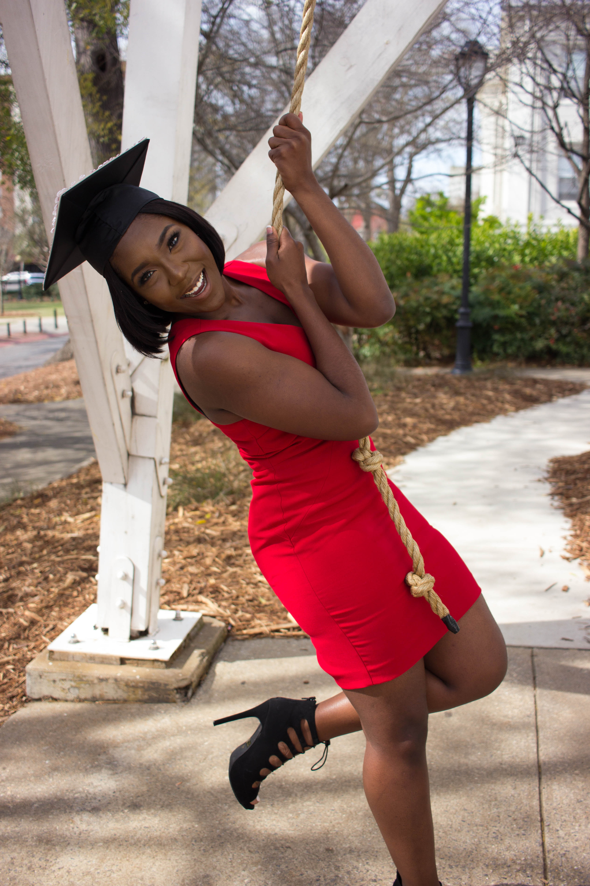

What is a R.A.R.E Woman?
A R.A.R.E woman is one who is ready to step into her God-given purpose.
A woman who is ready to step into her God-given identity of being Righteous, Acceptable, Redeemed, and
Eternally Saved. She understands that it is not by her works that she is these things, but that it
is because of God's love and because of who He is!
What Do I Need to do to be a R.A.R.E Woman?
- Have an open heart
- Desire a relationship with God
-
Most importantly:Know that you are loved, redeemed and made pure ONLY because of
His Unconditional Love! See below for biblical refrences:
- Ephesians 3:19 His love for us surpasses all understanding
- Isaiah 1:18 Though our sins are like scarlet He shall make them white as snow
- John 3:16 For God so loved the world, that He have His only Son to die for us
R.A.R.E Women in The Bible
Click here to check out our founder's blog!
| Meet The Founder of R.A.R.E Women |
|---|
| 
|
| Lise Pierre is a 22 year old student at the University of
Georgia studying Psychology. She is an author, poet, and mentor. |
|---|
A Poem By Our Founder
My first name is Lise-Farah.
Two first names for one so yeah you would correct to assume that I am extra
I never understood the beauty of my name until I embraced the beauty of me
See I believe that everyone’s name tells a story without them even knowing
Because I believe that no one is an accident
Born with a purpose so deeply rooted inside the spirit that is you, so indestructible, so you
Lise comes from the name Elizabeth, which means God’s chosen one
Elizabeth was the mother of John the Baptist. See I come from a line of women chosen for the glory of God
A lineage of people who can testify that when man says no, God is just beginning to carve a yes, a trinity of hope into your situation
It is the name for queens, royalty
Farah means joy, happiness, even traveler in some languages
That explains my desire to travel the world and paint it all things true, and love
Call me foolish or a dreamer
But there is joy and happiness in the darkest of things
I make my art there, I am fire burned and reshaped into the being that I am in that darkness
Darkness is light hiding but its there, thats the beauty of it
Lise-Farah is a witness, a storyteller to a world that is not her home
So I paint pictures with pain and love and love and pain
I paint canvas with words of triumph and victory
I believe in love
I believe that love can make Lazarus of any tortured soul
Can part the seas of darkness and light
Confusion and doubt
Insecurity and self worth
I believe that love is an anchor
A seed
Life
It was love that created me and you
Love that made crucifixion worth it
So I know how to say love in three different languages Father Son Spirit
Wait, no
Love, Amour, Amoue cheri
I have loved someone past their audacity to valet park my heart, make a joke of my tears, and a doormat to insecurities I could pray he would conquer
I have loved the stubbornness out of a woman who struggled to love past her pain
I have loved myself out the lion’s den of depression
My name means joy
My name carries a weight on your tongue, is reality hard pressed against your chest
Makes you believe in life and God again
All things spiritual
Say it right
My name is Lise-Farah
I am a witness. A poet. A story teller. But if you remember nothing
Remember this
My name is hope, joy,
My name is all things chosen
Worthy
God